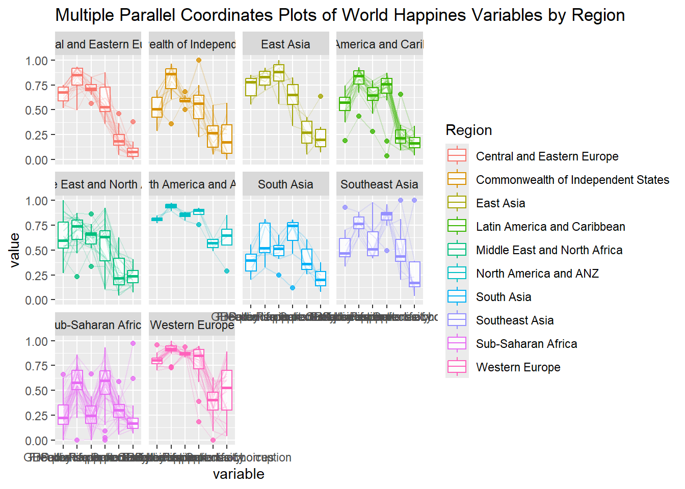
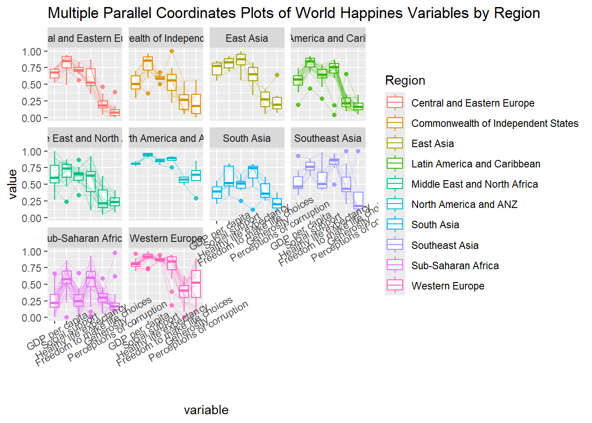

Code
pacman::p_load(GGally, parallelPlot, tidyverse)Andrea Yeo
February 11, 2025
With the assistance of ChatGPT
Parallel coordinates plots, invented by Alfred Inselberg in the 1970s, are a visualization technique designed for analyzing multivariate numerical data. They help in comparing multiple variables and identifying relationships, commonly used in academic and scientific fields rather than business settings. As noted by Stephen Few (2006), their strength lies in interactive analysis rather than public presentation. A key application includes characterizing clusters in customer segmentation.
By the end of this hands-on exercise, we will be able to:
ggparcoord() from the GGally package.For this exercise, the below R packages will be used: - GGally: An extension of ggplot2 that simplifies multivariate data visualization, including parallel coordinates plots. - parcoords:A package for creating interactive parallel coordinates plots using htmlwidgets in R. - parallelPlot:A tool for generating interactive parallel coordinates plots with enhanced visualization capabilities. - tidyverse:A collection of R packages designed for data manipulation, visualization, and analysis following a consistent syntax.
This section covers plotting static parallel coordinates plots using ggparcoord() from the GGally package.
Code below shows a typical syntax used to plot a basic static parallel coordinates plot by using ggparcoord().
data and columns, are used in ggparcoord().To improve the interpretability of the World Happiness parallel coordinates plot, ggparcoord() provides customization options like - groupColumn for grouping, - scale for variable scaling, - alphaLines to reduce the intensity of the line colour, - showPoints for displaying data points, - splineFactor for smoothing, - title for parallel coordinates plot a title, - alphaLines for transparency control, and - boxplot for overlaying distributions.
Since ggparcoord() extends ggplot2, it allows integration with ggplot2 functions.
The example below uses facet_wrap() to create multiple small parallel coordinates plots, each representing a different geographical region, such as East Asia.

One of the aesthetic defect of the current design is that some of the variable names overlap on x-axis.
To improve readability, the x-axis labels are rotated by 30 degrees using the theme() function in ggplot2. This enhances clarity when displaying parallel coordinates plots.

Thing to learn from the code chunk above:
axis.text.x in the theme() function and set element_text(angle = 30) to rotate the labels by 30 degrees.To prevent label overlap after rotating x-axis text by 30 degrees, adjust text positioning using the hjust argument in element_text() within the theme() function, applied to axis.text.x.
The parallelPlot package in R, built on htmlwidgets and d3.js, enables interactive parallel coordinates plots. This section covers its key functions for creating dynamic visualizations.
Notice that some of the axis labels are too long.
rotateTitle argument is used to avoid overlapping axis labels.
A key interactive feature of parallelPlot allows users to click on a variable, such as Happiness Score, changing the default blue color to varying intensities for better visualization.
We can change the default blue colour scheme by using continousCS argument as shown in the code below:
histoVisibility argument is used to plot histogram along the axis of each variables.
---
title: "Hands-on Exercise 05d"
author: "Andrea Yeo"
date-modified: "last-modified"
execute:
echo: true
eval: true
warning: false
freeze: true
---
[With the assistance of ChatGPT]{style="font-size: 14px;"}
## 5. Visual Multivariate Analysis with Parallel Coordinates Plot
### 5.1 Overview
Parallel coordinates plots, invented by [Alfred Inselberg](http://www.math.tau.ac.il/~aiisreal/) in the 1970s, are a visualization technique designed for analyzing multivariate numerical data. They help in comparing multiple variables and identifying relationships, commonly used in academic and scientific fields rather than business settings. As noted by [Stephen Few](https://www.perceptualedge.com/articles/b-eye/parallel_coordinates.pdf) (2006), their strength lies in interactive analysis rather than public presentation. A key application includes characterizing clusters in customer segmentation.
By the end of this hands-on exercise, we will be able to:
- Plot static parallel coordinates plots using `ggparcoord()` from the [**GGally**](https://www.rdocumentation.org/packages/GGally/versions/2.2.1) package.
- Create interactive parallel coordinates plots with the [**parcoords**](https://www.rdocumentation.org/packages/MASS/versions/7.3-64/topics/parcoord) package.
- Generate interactive parallel coordinates plots using the [**parallelPlot**](https://www.rdocumentation.org/packages/parallelPlot/versions/0.4.0) package.
### 5.2 Installing and Launching R Packages
For this exercise, the below R packages will be used:
- [**GGally**](https://www.rdocumentation.org/packages/GGally/versions/2.2.1): An extension of ggplot2 that simplifies multivariate data visualization, including parallel coordinates plots.
- [**parcoords**](https://www.rdocumentation.org/packages/MASS/versions/7.3-64/topics/parcoord):A package for creating interactive parallel coordinates plots using htmlwidgets in R.
- [**parallelPlot**](https://www.rdocumentation.org/packages/parallelPlot/versions/0.4.0):A tool for generating interactive parallel coordinates plots with enhanced visualization capabilities.
- [**tidyverse**](https://www.rdocumentation.org/packages/tidyverse/versions/2.0.0):A collection of R packages designed for data manipulation, visualization, and analysis following a consistent syntax.
```{r}
pacman::p_load(GGally, parallelPlot, tidyverse)
```
### 5.3 Data Preparation
```{r}
wh <- read_csv("data/WHData-2018.csv")
```
::: callout-note
- This section data is the same dataset used in [Hands-on_Ex05c](Hands-on_Ex05c.html)
:::
### 5.4 Plotting Static Parallel Coordinates Plot
This section covers plotting static parallel coordinates plots using [ggparcoord()](https://ggobi.github.io/ggally/reference/ggparcoord.html) from the **GGally** package.
#### 5.4.1 Plotting a simple parallel coordinates
Code below shows a typical syntax used to plot a basic static parallel coordinates plot by using `ggparcoord()`.
```{r}
ggparcoord(data = wh,
columns = c(7:12))
```
- Only two arguments, `data` and `columns`, are used in `ggparcoord()`.
- The data argument maps the dataset (e.g., wh), while columns selects the variables for the parallel coordinates plot.
#### 5.4.2 Plotting a parallel coordinates with boxplot
To improve the interpretability of the World Happiness parallel coordinates plot, `ggparcoord()` provides customization options like
- groupColumn for grouping,
- scale for variable scaling,
- alphaLines to reduce the intensity of the line colour,
- showPoints for displaying data points,
- splineFactor for smoothing,
- title for parallel coordinates plot a title,
- alphaLines for transparency control, and
- boxplot for overlaying distributions.
```{r}
ggparcoord(data = wh,
columns = c(7:12),
groupColumn = 2,
scale = "uniminmax",
alphaLines = 0.2,
boxplot = TRUE,
title = "Parallel Coordinates Plot of World Happines Variables")
```
#### 5.4.3 Parallel coordinates with facet
Since `ggparcoord()` extends **ggplot2**, it allows integration with **ggplot2** functions.
The example below uses `facet_wrap()` to create multiple small parallel coordinates plots, each representing a different geographical region, such as East Asia.
```{r}
ggparcoord(data = wh,
columns = c(7:12),
groupColumn = 2,
scale = "uniminmax",
alphaLines = 0.2,
boxplot = TRUE,
title = "Multiple Parallel Coordinates Plots of World Happines Variables by Region") +
facet_wrap(~ Region)
```
One of the aesthetic defect of the current design is that some of the variable names overlap on x-axis.
#### 5.4.4 Rotating x-axis text label
To improve readability, the x-axis labels are rotated by 30 degrees using the `theme()` function in ggplot2. This enhances clarity when displaying parallel coordinates plots.
```{r}
ggparcoord(data = wh,
columns = c(7:12),
groupColumn = 2,
scale = "uniminmax",
alphaLines = 0.2,
boxplot = TRUE,
title = "Multiple Parallel Coordinates Plots of World Happines Variables by Region") +
facet_wrap(~ Region) +
theme(axis.text.x = element_text(angle = 30))
```
Thing to learn from the code chunk above:
- To rotate x-axis text labels, use `axis.text.x` in the `theme()` function and set `element_text(angle = 30)` to rotate the labels by 30 degrees.
#### 5.4.5 Adjusting the rotated x-axis text label
To prevent label overlap after rotating x-axis text by 30 degrees, adjust text positioning using the `hjust` argument in `element_text()` within the `theme()` function, applied to `axis.text.x`.
```{r}
ggparcoord(data = wh,
columns = c(7:12),
groupColumn = 2,
scale = "uniminmax",
alphaLines = 0.2,
boxplot = TRUE,
title = "Multiple Parallel Coordinates Plots of World Happines Variables by Region") +
facet_wrap(~ Region) +
theme(axis.text.x = element_text(angle = 30, hjust=1))
```
### 5.5 Plotting Interactive Parallel Coordinates Plot: parallelPlot methods
#### 5.5.1 The basic plot
The [parallelPlot](https://cran.r-project.org/web/packages/parallelPlot/) package in R, built on htmlwidgets and d3.js, enables interactive parallel coordinates plots. This section covers its key functions for creating dynamic visualizations.
```{r}
wh <- wh %>%
select("Happiness score", c(7:12))
parallelPlot(wh,
width = 320,
height = 250)
```
Notice that some of the axis labels are too long.
#### 5.5.2 Rotate axis label
`rotateTitle` argument is used to avoid overlapping axis labels.
```{r}
parallelPlot(wh,
rotateTitle = TRUE)
```
A key interactive feature of parallelPlot allows users to click on a variable, such as Happiness Score, changing the default blue color to varying intensities for better visualization.
#### 5.5.3 Changing the colour scheme
We can change the default blue colour scheme by using continousCS argument as shown in the code below:
```{r}
parallelPlot(wh,
continuousCS = "YlOrRd",
rotateTitle = TRUE)
```
#### 5.5.4 Parallel coordinates plot with histogram
`histoVisibility` argument is used to plot histogram along the axis of each variables.
```{r}
histoVisibility <- rep(TRUE, ncol(wh))
parallelPlot(wh,
rotateTitle = TRUE,
histoVisibility = histoVisibility)
```
### 5.6 References
- Kam, T.S(2024). [Visual Statistical Analysis.](https://r4va.netlify.app/chap15)
- [ggparcoord()](https://ggobi.github.io/ggally/reference/ggparcoord.html) of [GGally](https://ggobi.github.io/ggally/index.html) package
- [parcoords user guide](https://plotly.github.io/plotly.py-docs/generated/plotly.graph_objects.Parcoords.html)
- [parallelPlot](https://cran.r-project.org/web/packages/parallelPlot/parallelPlot.pdf)
### 5.7 Takeaway
::: callout-tip
## Key takeaways
- Parallel Coordinates Plots: Useful for visualizing multivariate numerical data and identifying relationships.
- Static Plots: Created using ggparcoord() from GGally, allowing customization with grouping, scaling, and faceting.
- Improving Readability: Rotate x-axis labels (theme()), adjust label positioning (hjust).
- Interactive Plots: parallelPlot() enables dynamic visualization with adjustable colors, rotated labels, and histograms.
:::
### 5.8 Further exploration